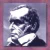

Darby, John Nelson |
|||||||||||||
|---|---|---|---|---|---|---|---|---|---|---|---|---|---|
|

Darby, John Nelson
Life and Writings
Early leader among the Plymouth Brethren and developer of dispensational premillennialism, John Darby (1800-1882) invested his life in strengthening the saints as they gathered simply "to His name" and awaited their Lord's any-moment return. Born in London of wealthy Irish parents, Darby received his middle name from Admiral Lord Nelson. Upon returning to Ireland in 1815, he entered Trinity College, Dublin, graduating in 1819 as a classical gold medallist. Although called to the Irish Chancery Bar in 1822, he gave up a career in law after only one year to enter religious ministry. After a prolonged spiritual struggle leading to his conversion, Darby was ordained as a deacon in 1825 and as a priest in the Church of England in 1826. He had an unusually fruitful evangelistic ministry among Catholics in his parish of County Wicklow, Ireland.
From 1827 to 1833, Darby's ecclesiology and eschatology were formed. Disenchanted with the state-church religion. Darby addressed in his earliest writing the heavenly nature of the church and the need for it to be unencumbered with earthly things. He soon discovered a group of like-minded people meeting in Dublin for Bible study, worship, and breaking of bread without ecclesiastical ritual and hierarchy. By 1831, he had left the Church of England and joined others in Plymouth, England, who were opposed to denominationalism, one-man ministry, and church formalism. From this time on, Darby's life would be inextricable from the influential Plymouth Brethren movement. The Powerscourt Conferences from 1831- 33 would provide the context in which Darby's eschatology would be aligned consistently with his ecclesiology. Afterward his innovations in both fields of theology would be widely accepted throughout the Brethren movement, yielding a new perspective and interpretation of Scripture that would be known as dispensationalism.
Darby traveled, taught, and wrote extensively from 1832 to 1845. He worked in Switzerland and France from 1838 to 1845, and soon afterward began to write in French what would be called in the English translation his Synopsis of the Books of the Bible. He did not finish these five volumes until 1865. His chief aim was to give the reader a guide to clearly apprehend the difference between the church called to heavenly places and the governments of this world with which the Jews play a central role in God's ways. Darby skillfully explained the "argument" of each book by showing how various sections of them relate to the main point. His sense for the historical and developmental dimensions of "biblical theology" stands out in his Synopsis.
In 1845, the Great Schism over B. W. Newton's differing views concerning the "secret rapture" and his supposed lapse into clericalism brought tremendous dissension among the Brethren assemblies. Combined with the Bethesda Question (in 1848, George Muller and Darby disagreed as to the interrelationship of assemblies over matters of discipline), the Schism would leave the Brethren from this time forward divided into Exclusive and Open Brethren.
Darby would remain the dominant voice among the Exclusives for the next 30 years. During this time, both groups would be deeply involved in missions, although the Exclusives seemed to be more occupied with, truth for the believer while the Opens were given to evangelizing the lost. Between 1853 and the time of his death, Darby himself would make at least three trips to Germany, spend considerable time in France, visit Italy, New Zealand, and the West Indies. He preached fluently in both French and German. During one span of time (1859-74), he made seven visits to Canada and the U.S.A. Amid his extensive teaching tours, he found rime to translate the New Testament into English, French, and German, and he assisted in translating the Old Testament into both French and German.
The Letters of J. N. Darby comprise three large volumes addressing a wide range of topics. Most of his papers and articles are gathered in thirty-four volumes of The Collected Works of J. N. Darby, edited by his longtime associate and friend William Kelly. In general, Collected Works is organized chronologically within a volume, and thematically from volume to volume. Subject headings include "Ecclesiastical" (vols. 1,4, 14,20), "Prophetic" (vols. 2,5,8, 11), "Doctrinal"(vols.3, 7, 10,15,18,22,23,29,31), "Apologetic" (vols. 6. 9), "Evangelical" (vols. 12, 21), "Critical" (vol. 13), "Practical" (vols. 16, 17), "Expository" (vols. 19, 24-28, 30), and "Miscellaneous" (vols. 32- 34). An excellent general index volume aids in researching topics not only throughout Darby's Letters and Collected Works, but also throughout the two volumes of Miscellaneous Writings of J. N. Darby (actually vols. 4 and 5 of his miscellaneous writings since vols. 1-3 are the last three volumes of the Collected Works), seven volumes of Notes and Comments on Scripture, and Notes and Jottings from Various Meetings with J. N. Darby. The last volume seems to be nuggets preserved by students and listeners. A small volume of poetry, meditations, and hymns entitled Spiritual Songs and Darby's Synopsis of the Books of the Bible are not included in the index.
Eschatology
Acknowledged father of modem dispensational premillennialism. Darby is remembered especially for his recalling the church to expectancy for its rapture at the return of the Lord before Daniel's Seventieth Week. To a large degree, his eschatology flows out of his ecclesiology which underwent radical change between 1827 and 1831. To understand this change, Darby's background at Trinity College, Dublin, and the state of the Anglican church at that time must be seen.
While at Trinity College, Darby came under the influence of theologians like Regius Professor Richard Graves who was an advocate for the Jewish people in the British empire. Graves, a postmillennialist, believed that through the conversion of Israel and their return to their ancient homeland, the millennial era would be ushered in. A Gentile "parenthesis" had existed since the rejection of Jesus as Messiah by Israel. Old Testament promises to Abraham and his seed concerning their homeland, however, were unconditional. Prophesied blessings on the Jewish people could be fulfilled soon by zealous missionary activity among them. Darby took into the ministry this respect for the Old Testament vision of a future for national Israel.
As a young parish priest, Darby became disillusioned with the state-church system which took advantage of governmental sanction. His belief that the church as the body of Christ was to be a heavenly people and not court earthly favors was formulated by 1827. During the same year, an accidental fall from his horse forced him into a lengthy convalescence and gave him much time alone with God and His word. Isaiah 32 convinced him that there was to be a future economy in which Israel would enjoy earthly blessings. Not at all like the present heavenly blessings he was conscious of because of his union with Christ. Dispensational distinctives were taking shape in his thinking.
The Powerscourt Conferences of 1831 to 1833 most probably moved Darby from his earlier historicist premillennialism to futurist premillennialism. The transition from the present church dispensation to the millennia] kingdom in which Israel had center stage under Christ's rule was supplied by seeing Daniel's Seventieth Week as yet future. Before that time the church would be raptured to heavenly glory, while during that time God would bring into existence a remnant of Israel who would experience deliverance from their enemies at the return of Christ to the earth. By his own testimony, Darby's dispensational premillennial eschatology was fully formed by 1833.
For Darby, a dispensation is an economy, any order of things that God has arranged on the earth. The primary characteristics of a dispensation include governmental administration, responsibility, and revelation to fulfill both. Secondary characteristics include testing, failure, and judgment. When a group fails the test to exercise their responsibility given to them by God, judgment falls and ends the dispensation. Given these parameters, Darby saw three "worlds" or ages: from Adam until Noah's flood, from Noah until the renovation of the heavens and earth by fire at the end of the millennium, and the eternal state. Properly speaking, Darby did not think that any dispensations existed in the first world. God just left the race to itself. Also the eternal state is not a dispensation. Thus only from Noah through the millennium could dispensations be distinguished. Darby traced eight dispensations as follows: (1) Noah. (2) Abraham. (3) Israel under law (prophet), (4) Israel under the priesthood. (5) Israel under the kings, (6) Gentiles (from Nebuchadnezzar to the Antichrist), (7) church or Christian (although he hesitates to call the church in its heavenly perspective a dispensation), and (8) Millennium or kingdom. Darby's order of end-time events may be grouped as follows: (1) the rapture and first resurrection, (2) postrapture events in heaven, (3) postrapture events on earth, (4) the millennial kingdom, (5) postmillennial events, and (6) the eternal state.
1. The Rapture occurs before the final time of trial to come upon the earth. The church must already be with Christ in heaven to be able to appear with Him at His glorious return. Darby hesitated to call the Rapture secret, although he believed the time of its occurrence was unknown, yet possible at any moment. The first resurrection of the just coincides with the Rapture. Thus all those who have died in faith from both the Old Testament and New Testament eras will be raptured with the living church saints. Although all who have a resurrection body will be related in some way to the New Jerusa1cm, flashy called only the church the bride so as to give it the chief position among those glorified.
2. After the Rapture, several things transpire in heaven. First. Satan is cast out of heaven to the earth. Then the saints will experience the judgment seat of Christ in preparation for the marriage of the Lamb. The latter event will take place after the judgment of Babylon.
3. Events on earth after the Rapture relate to Daniel's Seventieth Week. At times Darby spoke of this seven-year period as entirely future, but at other times as only three and one-half years remaining for the future (the first three and one-half years being the earthly ministry of Christ). Some future time of trial was necessary after the Rapture to prepare a Jewish remnant that would be delivered by Messiah's personal return to the earth. During that time, the Beast would arise as the secular head of evil imperial government, and the False Prophet would arise as the Antichrist, the spiritual head of evil religious energy. The Day of the Lord is at the appearing of Christ at the end of the Tribulation period. Armageddon ends the Beast's and Antichrist's power, and Satan himself will be bound soon after. Next the land of Israel is cleansed. Then the judgment of the living on earth takes place to determine who among them will enter the millennial kingdom. After a short time of peace and security in their land, Israel will be attacked by Gog (= Russia) whom the Lord utterly destroys.
4. In the millennial kingdom, the land promises given to Abraham will be fulfilled for a restored Israel. Messiah delivers the remnant, which becomes the blessed nation by destroying all its enemies. Afterward Israel will occupy the chief place among the nations on earth in Messiah's kingdom, just as the church as the bride of Christ will occupy the chief place among those resurrected in the New Jerusalem.
5. Events after the Millennium include the final revolt of Satan, the second resurrection, and the Great White Throne judgment of the unbelieving dead. Darby believed in the eternal conscious punishment of the lost in the lake of fire.
6. The eternal state will bring an end to Israel's special position above the nations of the millennial kingdom. But there will eternally be a distinction between the church and the earthly people in its eternal state format. "The tabernacle of God" (for Darby, meaning the church in Rev. 21:2-3) would be "with men" (the earth inhabiters without national distinction). Thus the church will have special distinction in eternity since "to Him be glory in the church throughout all ages (Eph. 3:21) refers to a relationship that persists forever. Two peoples of God, an earthly and a heavenly, will be eternally distinct simply because saved humans in natural bodies will be distinguished from the saved who have resurrection bodies in the eternal state. Floyd Elmore
Taken from Dictionary of Premillennial Theology, Couch |
||||||||||||